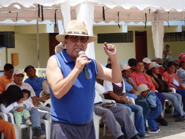

Pronunciamientos de autoridades
En su intervención, el ingeniero Diego García dijo que le satisface estar de nuevo a Íntag, no por campaña ni referéndum. Aseguró que es consciente y responsable con el pueblo y la comunidad. Además, manifestó que Imbabura es tierra de oportunidades y que para esto se necesitan vías que ayuden a las comunidades olvidadas. Por un lado, terminar la vía Otavalo-Selva Alegre-Quinindé abriría un eje transversal para tener unida la parte marítima con la parte fluvial. Esta propuesta será un adelanto enorme para la provincia, aseguró. Asimismo, dijo que la riqueza que tiene Íntag no la tienen otras zonas. También afirmó que están transparentando las cosas y que los veedores ciudadanos tienen que hacer las demandas con justificativos y argumentos. Además, manifestó que el enfoque del GPI no es sólo hacer carreteras de primer orden para movilizarse sino crear producción, fuentes de trabajo y riqueza.
“Como quisiera tener todo el presupuesto para satisfacer las necesidades de los imbabureños. Tenemos limitaciones, pero a pesar de esto, se quiere mejorar las condiciones de ustedes”, aseveró.
Por su parte, el ingeniero Patricio Jaramillo, director de Infraestructura Física del GPI, dijo que la meta es que con la vía asfaltada, Imbabura se convierta en la puerta para que los recursos de Imbabura vayan hacia Esmeraldas. También aseguró que por el momento están haciendo un inventario vial en toda la provincia y la socialización para conocer las inquietudes de los habitantes.
El doctor José Romero, consultor del Consorcio Intag, aseguró que harán una evaluación ambiental para que la vía tenga las mejores condiciones ambientales. El objetivo es contar con una buena vía. Esto permitirá transportar los productos de una provincia a otra, afirmó. El consultor añadió que si se quiere tener un acceso de doble vía, demorará año y medio, lo que significaría más fuentes de trabajo. Hay impactos positivos y negativos, por eso es importante identificar todas las situaciones, afirmó. Al hacer un plan de manejo tiene que integre señalización preventiva y ecológica, disminuir la contaminación y concientizar a la población, afirmó. En cuanto a la contaminación, afirmó que el monitoreo lo hará el Ministerio del Ambiente. Si hay afectaciones ambientales, la constructora deberá hace algunos cambios, aseguró.
Inquietud de los habitantes en la construcción de la vía
Carlos Zorrilla, director ejecutivo de Defensa y Conservación Ecológica de Íntag (DECOIN), dijo que le preocupa que las comunidades aledañas no hayan sido consultadas y que quedaran desvinculadas de la vía. También aclaró que como DECOIN no se oponen a la vía. Pero que se haga de manera transparente, que se minimicen los impactos ambientales y sociales y que se respete el medioambiente. También enfatizó que se piense en el impacto que puede tener si se hace a orillas de uno de los ríos más limpios de la zona, el Toabunchi y afectando el poco bosque que existe. Asimismo, aseguró que, como organización ambiental, tiene información sobre el medioambiente que podría servir en los estudios.
Por su parte, Wilson Hidrovo, un nativo de Íntag, dijo que es una maravillosa oportunidad que se ha presentado por la que han luchado por muchos años los moradores. También afirmó que en la actualidad se manejan intereses personales y no comunitarios en la construcción de la vía. Por ejemplo, cuando la carretera quedó en La Delicia, Luis Moreano, el dueño de la actual hacienda de la comunidad de Santa Rosa hizo las debidas gestiones para que la vía pase por su propiedad. Se mostró muy optimista por la tercera opción, de “tener una vía como se merece Íntag”. En cuanto a las culebritas y pajaritos, dijo que “es cuestión de ponerlos a un lado no más y no pasa nada”.
Ramiro Ayala, técnico del Ministerio del Ambiente, dijo que toda la vida han sentido la necesidad de tener una vía de primer orden. Que es un proyecto que beneficia a una provincia y el país y a los países vecinos. También expresó que habrá cuestionamientos de las comunidades en caso de que estén fallando.
Según Joel Cabascango, la vía ofrece el espacio para unirse y exigir que la obra se haga bien. También dijo que es penoso que un grupo de personas no quieren el desarrollo de Íntag. Asimismo expresó que las juntas parroquiales deberían liderar el proceso. Y le pidió al prefecto García que la obra se haga realidad.
Cuando era campaña los postulantes para prefectos siempre ofrecían mejoras o el asfalto de la carretera y con esa propuesta ganaban, recordó Luis Sevillano. Dio el ejemplo de Luis Mejía Montesdeoca quien, cuando ganó, el ofrecimiento nunca cumplió. Hoy las nuevas dignidades han hecho el mismo ofrecimiento, pero el señor Sevillano, y aseguró que lo van a cumplir. También dio a conocer al ingeniero García que el equipo caminero no está cumpliendo con el trabajo. Asimismo, dijo que las veces que las autoridades entran, encuentran las vías en pésimas condiciones. Además, pidió que los trabajadores del GPI cumplan con el horario de trabajo y que lo hagan bien hecho y no a medias.
 Por su parte, Marcia Haro, moradora de Cristopamba, agradeció al Prefecto. En cuanto a los trabajadores del GPI, dijo que cuando saben que entra el prefecto, “trabajan más que sea medio medio”. También manifestó que la presencia de las autoridades no sea la campaña por el ‘sí’ para el referéndum. Asimismo, se asombró ver cuánta gente estaba en la socialización de la vía con chalecos del GPI, pero cuando se los necesita no están, afirmó. De igual forma, le recordó al Prefecto que es más de un año que ofreció arreglar el tanque de las aguas servidas de Apuela y todavía siguen esperando las personas que viven aguas abajo. En cuanto a que los jóvenes se preparan y regresan a la zona como profesionales, la licenciada Haro dijo que lo mejor sería que se haga una universidad técnica en Íntag que antes que salir a estudiar afuera.
Por su parte, Marcia Haro, moradora de Cristopamba, agradeció al Prefecto. En cuanto a los trabajadores del GPI, dijo que cuando saben que entra el prefecto, “trabajan más que sea medio medio”. También manifestó que la presencia de las autoridades no sea la campaña por el ‘sí’ para el referéndum. Asimismo, se asombró ver cuánta gente estaba en la socialización de la vía con chalecos del GPI, pero cuando se los necesita no están, afirmó. De igual forma, le recordó al Prefecto que es más de un año que ofreció arreglar el tanque de las aguas servidas de Apuela y todavía siguen esperando las personas que viven aguas abajo. En cuanto a que los jóvenes se preparan y regresan a la zona como profesionales, la licenciada Haro dijo que lo mejor sería que se haga una universidad técnica en Íntag que antes que salir a estudiar afuera. La licenciada Haro fue crítica de la actitud del gobernador de Imbabura. Aseguró que cuando llegaron a la Gobernación a pedir más policía por el robo de ganado, el Gobernador dijo que sí había la policía. Según la licenciada Haro, los dos policías que hay en Apuela no son suficientes comparados con los que hay en otras parroquias. En Apuela si un policía sale el otro queda de servicio. “Pero ni siquiera cuentan con una triste bicicleta, peor con una camioneta”, finalizó.
La presidenta de la parroquia de García Moreno, Shisela Morales, dijo que todo proyecto grande tiene sus impactos, pero que a la vez la vía asfaltada es un paso para el desarrollo. Además, hizo la comparación del antiguo camino hacia la comunidad de El Chontal: antes se demoraban una hora y media, con la nueva vía se hace veinte minutos, afirmó. Para el sector de los Manduriacos es un paso importante, ahora la gente tiene más accesibilidad para sacar sus productos. Asimismo, la señora Morales pidió que se concluya la obra porque es un sueño de todos los inteños.
Pies de Fotos:
Diego García, prefecto de Imbabura, socializando las propuestas para la vía Cuicocha-Apuela-Aguagurum, (portada)
Los pajaritos y las culebritas se las pondrá a un lado cuando construyan la nueva carretera, según Wilson Hidrovo.Marcia Haro, moradora de Cristopamba, cuestiona las obras del GPI y la actitud del Gobernador de la provincia.